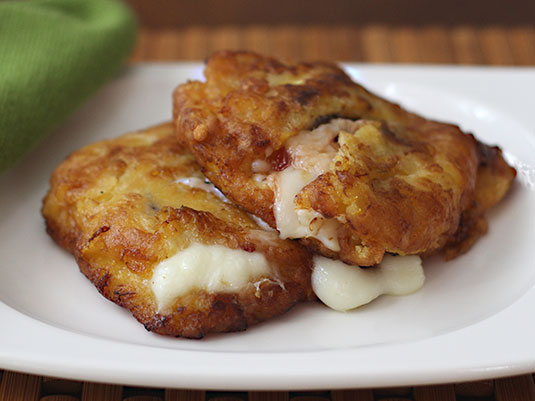

Traditional Colombian starter dishes
Colombian food is very diverse. It offers dishes that have been handed down from generation to generation,
influenced by not only indigenous Colombian culture, but Spanish, African and Arab nuances as well.
Over the years, the concoction of flavours from different influences has given Colombian cuisine its complex
flavour profile.
Arepas

Go to Arepas Recipe
Author: Javier Romero
The first reference to this product was made in 1539, it is evidence that its origin was from the natives of the
new world since in the writings of the time there were descriptions on a thick cake called arepas.
Today this food is very common in Venezuela and Colombia being a shared heritage of our ancestors,
adapted to the local tastes of each. In Colombia each region has its own way of preparing
arepas, grilled, roasted, fried or baked. May be sweet or salty, stuffed or unfilled.
Time: 45 minutes - Difficulty: Easy - 219Kal
Ingredients
- 225 g pre-cooked white maize flour
- 360 ml of wate
- 40 g of butter
- 150 g grated mozzarella cheese
- 1 teaspoon of salt
- Olive Oil
Steps
-
Mix the water with the flour
We begin by putting in a large bowl the warm water. Then we add the flour gradually while we mix.
As we put the flour, it will be made into a dough.
-
Add salt and butter
Once we have mixed all the flour, add the salt, integrate it, and then melted butter.
-
Add the cheese
After adding the butter to the dough, add the grated mozzarella cheese and mix it with the rest of the dough.
Then I recommend taking it to a flat surface and continue kneading it about 5 minutes more.
If you see that it sticks to the hands in excess, you have to put a little more flour until this does not happen.
-
Start shaping the arepas
With the dough ready, it’s time to shape the arepas.
We take a dumpling and crush it into a disc shape. Then we gather the formed cracks on edges.
-
Cook the arepas
When we have several arepas formed, we put a frying pan to the fire with a splash of olive oil well extended by
the bottom. When it is hot, place the arepas and start cooking.
-
Grill the arepas
We wait for the arepas to brown on both sides. This is going to take a few minutes, at least 7 on each side.
Aborrajados

Go to Aborrajados Recipe
Author: Patricia Stern
The ripe banana is a wonderful product! There are many ways to take advantage of it and as long as the peel (bark) is darker,
its flavor will be sweeter and its consistency softer, this is the type of banana we will need for our recipe.
The Aborrajados Bananas are one of the typical dishes of the cuisine of Valle del Cauca in Colombia,
a very old recipe that has passed from generation to generation.
Time: 30 minutes - Difficulty: Medium - 488Kal
Ingredients
- 1 unit of Ripe Banana
- 50 g of Mozzarella cheese
- 2 tablespoons of Flour
- 1 unit of Egg
- 80 milliliters of Milk
- 1 pinch of Salt
- 1 pinch of Sugar
- 500 milliliters of oil
Steps
-
Peeling and cutting the banana
Peel and cut the banana into medium portions, fry in oil at medium temperature until golden.
-
Squash the Banana
Immediately crush the banana in the middle of a plastic bag to avoid sticking, arrange some cheese in the middle cut into thick strips and close the banana until you get a cylinder.
-
Prepare the batter
For batter, whir egg, milk, flour, a pinch of salt and sugar until homogeneous mixture.
-
Cover with the batter
Add the Aborrajado in the batter mixture until it is completely covered.
-
Start Frying
Immediately fry the cheese-filled banana in oil at medium temperature until golden brown, about 5 minutes.
When ready, pass through absorbent paper to remove excess fat.
-
Serve the dish
It is time to serve the Colombian aborrajados, I recommend consuming them warm or hot to enjoy the crispy texture
of the cover and melted cheese. You can accompany this preparation with a homemade lemonade.
Hogao

Go to Hogao Recipe
Author: Laura Duran
The Colombian hogao is a salty salsa and constitutes the basis of many of the typical foods of this country.
It is made from tomato and onion long and white, and is widely used as a sofrito for many Colombian recipes,
also as a sauce and dressing of some entrees or appetizers, adding a little cumin, oregano or achiote,
this depends on the person or house in which they are made.
Time: 30 minutes - Difficulty: Medium - 488Kal
Ingredients
- 200 grams of long onion
- 4 units of Red Tomatoes
- 1 unit of white onion
- 1 pinch of garlic paste
- 1 pinch of cumin
- 1 pinch of salt
- 1 pinch of pepper
Steps
-
Cut the onion
Cut the onion to make the hogao, cut them very little for them tu cuook better
-
Cook the onions
Bring a pan over medium heat and add a tablespoon of sunflower oil. Once hot, add the onion and white onion also finely chopped
-
Add the seasonings
Add salt and pepper to taste and distribute the onion pieces throughout the pan to make the Colombian hogao.
-
Add the resting ingredients
Once you notice that the onion takes a transparent color, add the tomato cut into small squares and leave to
sauté for a few minutes. Add garlic paste and cumin to taste, this will give a special touch to our colombian salsa
-
Start Frying
Immediately fry the cheese-filled banana in oil at medium temperature until golden brown, about 5 minutes.
When ready, pass through absorbent paper to remove excess fat.
-
Check the consistency
When the hogao has the desired consistency, we put out the fire and it will be ready to consume.